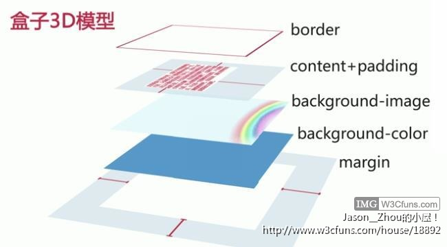
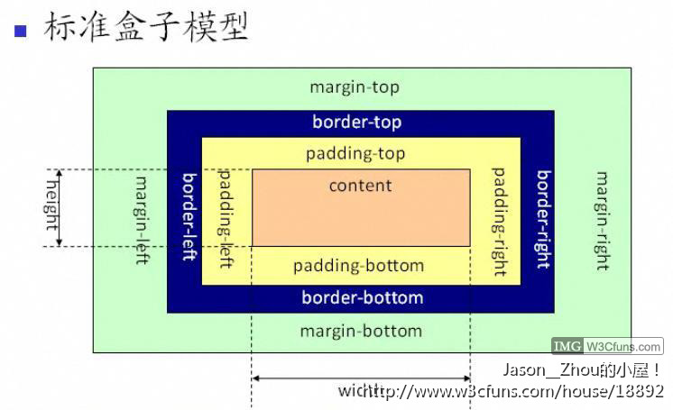

css盒子模型分为IE盒子模型和“W3C”标准盒子模型。我们一般都是使用的“W3C”标准盒子模型。所以这里就只介绍“W3C”标准盒子模型。
css盒子模型一共分为五层，从上到下分别是：
边框（border），位于盒子的第一层。
元素内容（content）、内边距（padding），两者同位于第二层。
背景图（background-image），位于第三层。
背景色（background-color），位于第四层。
整个盒子的外边距（margin），位于第五层。

css盒子模型各个属性介绍：

1.边框（border）
用于分隔不同元素、会占据空间、有4条边框、可无边框（设置为0）。
语法： border : border-width || border-style || border-color
取值： 该属性是复合属性。默认值为： medium none 。 border-color 的默认值将采用文本颜色。
边框属性简写: 同时设置边框的三个属性，例如：border: 3px solid green;（设置时以顺时针方向设置即：上右下左）
提示：border:0 比 border:none多渲染了一个border-width:0,所以border:none的性能要比border:0高。
2.内边距（padding）
用于控制内容与边框之间的距离；会占据空间。
可设置盒子模型上、右、下、左4个方向的内边距值；padding属性的值可以为0，即无内边距。
简写形式例如：padding:20px;（设置时以顺时针方向设置即：上右下左）。
3.元素内容（content）
内容本身的宽=width
内容本身的高=height
4.整个盒子的外边距（margin）
可设置盒子模型上、右、下、左4个方向的外边距值；margin属性的值可以为0，即无外边距。
分别设置4个方向的内边距和同时设置4个方向的内边距语法同padding属性设置方法类似。
简写形式例如：margin:20px;（设置时以顺时针方向设置即：上右下左）
提示：margin属性可以和附近相邻的元素的margin重合。结果的边界宽度是相邻边界宽度中最大的值。
如果出现负边界，则在最大的正边界中减去绝对值最大的负边界。如果没有正边界，则从零中减去绝对值最大的负边界。
5.盒子模型总尺寸
盒子模型总尺寸=border-width+padding+margin+内容尺寸（宽度/高度）。